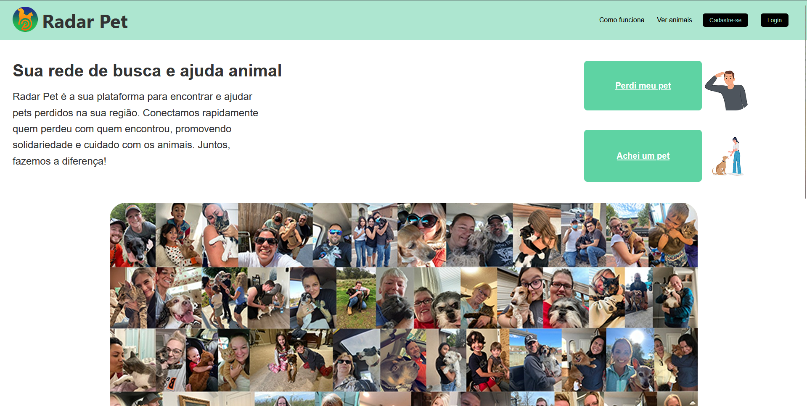

Projetos em Destaque
Vagalume Carreiras (TCC)
Plataforma Full Stack de recrutamento com IA. Inclui Dashboard para empresas, Matching de currículos com Vetores e geração de dicas de carreira com Gemini.
Ver Detalhes →

RadarPet
Sistema Web (Flask) para localização de animais perdidos. Conta com autenticação de usuários, upload e gerenciamento de imagens e banco de dados SQLite.
Ver Repositório →
Sistema Solar CSS
Experimento visual interativo demonstrando domínio de animações CSS avançadas e design responsivo.
Visitar Site →